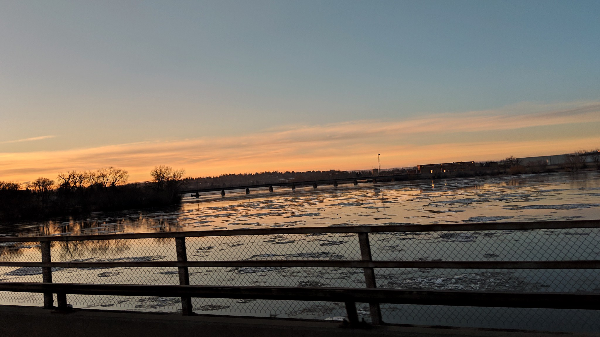

Breaking sunrise>

When I lived withmy parents we lived out of town. Being visually impaired i can't drive, so I found myself commuting backand forth with my mom a lot. This particular morning it was just me, and her, and we crossed the 10th Avenue bridge just at the perfect moment. The sun was just showing it's face, and the ice on the river had broken. I love moments like this. the time you catch something beautiful during your day, and it brightens everything. My Momis a big fan of this one too.